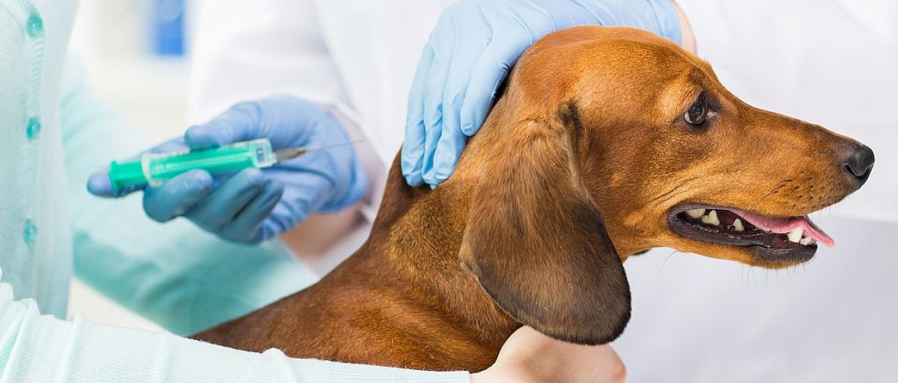

Уход за собаками

Уход за собаками — это не просто обязанность, это важная часть жизни каждого владельца, которая требует внимания и заботы. Правильный уход обеспечивает здоровье, счастье и долгую жизнь вашего питомца. В этой статье мы подробно рассмотрим основные аспекты ухода за собаками.
- Питание
- Выбор качественного корма
- Обратите внимание на состав корма: он должен содержать необходимые белки, жиры, углеводы, витамины и минералы.
- Консультируйтесь с ветеринаром при выборе корма, особенно если у вашей собаки есть особые потребности (аллергии, заболевания).
- Регулярность кормления
- Щенков следует кормить 3-4 раза в день, взрослых собак — 1-2 раза.
- Установите режим кормления и старайтесь придерживаться его.
- Учет индивидуальных потребностей
- Учитывайте возраст, породу и уровень активности вашей собаки.
- Следите за весом и состоянием здоровья: при необходимости корректируйте рацион.
- Физическая активность
- Прогулки на свежем воздухе
- Регулярные прогулки должны составлять не менее 30 минут в день для взрослых собак.
- Учитывайте породу: активные породы требуют больше времени на прогулки.
- Игры и тренировки
- Игры с мячом, фрисби или другие активные игры помогают поддерживать физическую форму.
- Занимайтесь дрессировкой: это не только полезно, но и укрепляет вашу связь с питомцем.
- Социальные взаимодействия
- Позвольте вашей собаке общаться с другими животными.
- Посещайте собачьи парки или организуйте встречи с друзьями-собаководами.
- Гигиена
- Купание и чистка шерсти
- Купайте собаку по мере необходимости (обычно раз в месяц), используя специальные шампуни.
- Регулярно расчесывайте шерсть, особенно у длинношерстных пород, чтобы избежать колтунов.
- Уход за зубами
- Чистите зубы вашей собаке хотя бы раз в неделю с помощью специализированной зубной пасты.
- Используйте жевательные игрушки для профилактики зубного камня.
- Уход за ушами и глазами
- Регулярно проверяйте уши на наличие грязи или инфекций; при необходимости очищайте их.
- Следите за состоянием глаз: удаляйте выделения с помощью влажной ткани.
- Здоровье
- Регулярные ветеринарные осмотры
- Запланируйте визиты к ветеринару минимум раз в год для общего осмотра.
- Вакцинация и профилактика заболеваний
- Соблюдайте график вакцинации, рекомендованный ветеринаром.
- Обработка от блох и клещей
- Используйте профилактические средства для защиты от паразитов, особенно в теплое время года.
- Обучение и социализация
- Основные команды (сидеть, лежать, ко мне)
- Социализация с другими животными и людьми
- Посещение курсов дрессировки
- Эмоциональное благополучие
- Создание комфортной среды
Время для игр и общения
- Уважение к личному пространству собаки
Уход за собакой — это не только ответственность, но и радость. Заботясь о своем питомце, вы укрепляете связь между вами и создаете счастливую атмосферу для жизни. Помните, что каждая собака уникальна, и важно учитывать её индивидуальные потребности для достижения наилучших результатов в уходе.